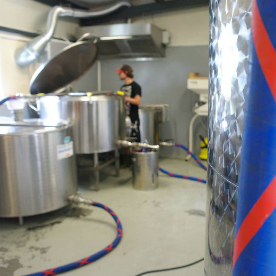
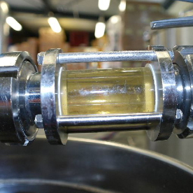

ER WAREN EENS TWEE KNAAPJES... Die elkaar op 5-jarige leeftijd leerden kennen in het dorp Kudelstaart, onder de rook van Amsterdam. Ze waren onafscheidelijk; Leon en Bryan speelden samen op het schoolplein, samen naar een zeilkamp, street hockey op de straat, met de ene stel ouders naar Duinrell, met de andere stel ouders zeilen op het IJsselmeer en later jarenlang samen fanatiek ijshockey spelen bij de Amstel Tijgers in Amsterdam. Nadat Leon op 13 jarige leeftijd naar Amsterdam verhuisde, verwaterde het contact. Het duurde 10 jaar voordat de twee elkaar weer ontmoetten. Leon werkzaam in de keuken van een café, Bryan studerend en inmiddels ook woonachtig in Amsterdam. De twee maakten er een gewoonte van om samen een biertje te drinken, waarbij het proeven van verschillende bieren een favoriete bezigheid was.
Heel wat proeverijen verder kwamen de twee op het idee om zelf bier te brouwen.Eerst thuis in de keuken, nu op grotere schaal in hun eigen brouwerij te Badhoevedorp. Mooie, eerlijke, ambachtelijke bieren met een verrassende smaak; zoals ze die zelf graag drinken. Wat begon op het schoolplein met de twee knaapjes, wordt nu voortgezet in een paar mooie bieren, waarvan de namen herinneren aan de schooltijd: strafwerk – krijtje – juffie. Proef het zelf, dat is mooi huiswerk!